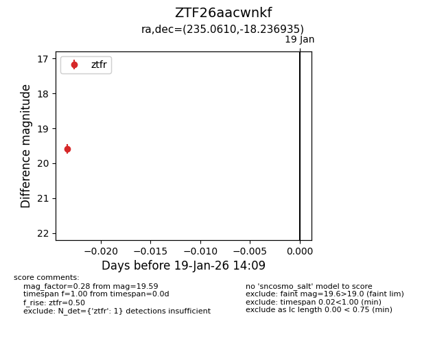
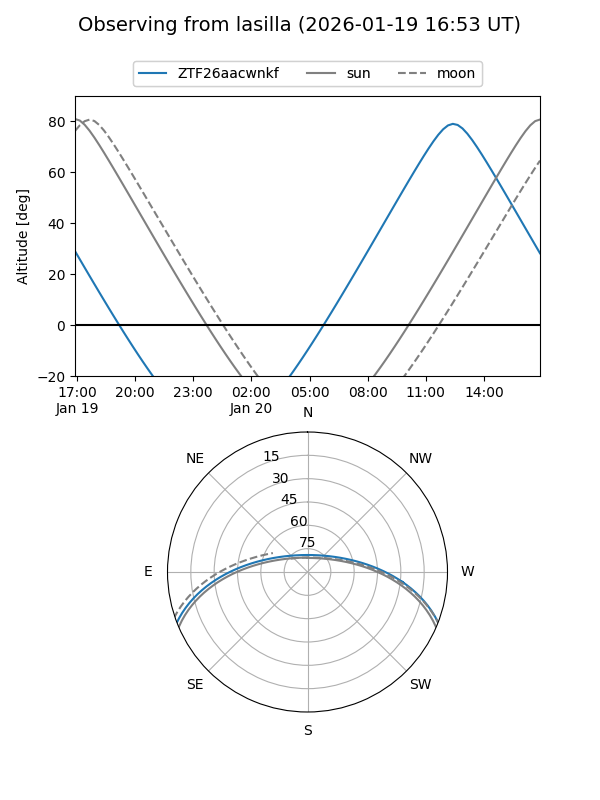

ZTF26aacwnkf
Target ZTF26aacwnkf at 2026-01-19 14:11
Aliases and brokers:
FINK: link
Lasair: link
ALeRCE: link
alt names
ZTF26aacwnkf (ztf,fink_ztf)
Coordinates:
equatorial (ra, dec) = 235.0610,-18.23694
equatorial (HMS+DMS) = 15:40:14.64,-18:14:12.97
galactic (l, b) = (349.7215,+28.91271)
Flags:
Photometry:
last ztfr=19.59
1 ztfr detections
Lightcurve

Visibility


Additional plots